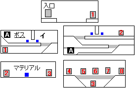
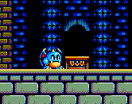

目次 > ゲームについて > 日本Falcom攻略 > ぽっぷるメイル > ステージ一覧 > 宝玉宮
ぽっぷるメイル
ステージ
|
第一 |
第二 |
第三 |
第四 |
第五 |
マップ名
|
正面城壁 |
宝物庫 |
地下迷宮 |
宝玉宮 |

入口→「地下迷宮」へ
ボス：ナッツクラッカー
イ：この台座に宝玉を乗せることで、通路をふさいでいる壁を上に
移動させられます。ただし、一番上まで壁が移動したところで、宝
玉を取り外さないと、次のマップで壁を動かせなくなります。

4～8の扉の先には、自由に動かすことのできるブロックがあります。
そのブロックを上手く移動させて、マップ上部にある扉を目指しまし
ょう。それぞれに、クリスタルを埋め込む部分があり、全てのクリス
タルを埋め込む(封印を解除)と、ワープして最終決戦となります。
こつは、キャラクターチップの大きさに注意し、「石靴」を装備させ
たりして、ジャンプの高さを調整することでしょうか。